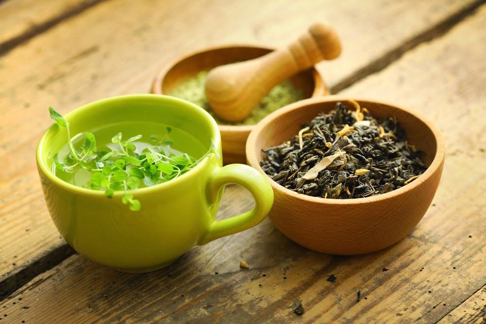

Witaj w elektronicznym zielniku!
Zawitałeś tutaj przez przypadek?
A może szukasz zapomnianych receptur zielarskich? Dobrze trafiłeś!

Staram się dodawać sprawdzone i najlepsze receptury wprost od himalajskich mnichów u których szkoliłem swoje umięjętności przez dwa lata. Te wyspecjalizowane przepisy zawierają wiele rzadkich i niekiedy niedostępnych gatunków ziół, ale nie zrażaj się! Każdą z tych roślin udało mi się wychodować w ogródku. To naprawdę niesamowite, jak wiele możemy w tej materii zrobić sami. A więc do dzieła, zarejestruj się i przejdź do zakładki "Zielnik" aby rozpocząć swoją przygodę z niesamowitymi eliksirami prosto z twojego ogródka.